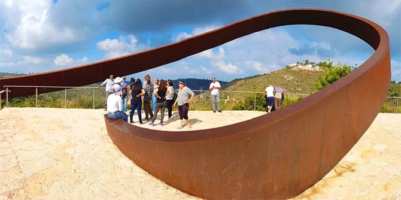

עמיתי תוכנית ירוחם-רמת הנגב יצאו לריטריט בן שלושה ימים בחיפה כדי לבחון את אבני הדרך שעברו במסע הלמידה לאורך השנתיים. הריטריט החל בביקור בבית הגפן, מקום של חיים משותפים, ובביקור בשכונת ואדי ניסנאס – ב"מוזיאון ללא קירות". במהלך הסיור למדו העמיתים על סוגיות בקיום מרובה ועל מגבלותיו.
אחר כך ביקרו העמיתים בבית הספר "הלב הקדוש" בניהולו של
ד"ר כרים נאסר. הביקור לווה בשיחה מעמיקה על משמעות הנתינה ועל משמעותו של ההווה לאנשים בעלי מוגבלויות קשות ולמטפלים בהם.

ביומו האחרון של הריטריט, שהובילו ד"ר יצחק (קיקי) אהרונוביץ' וד"ר נועה מילמן, ביקרו העמיתים באנדרטת הרוגי אסון השרפה בכרמל. בעזרת ד"ר סמדר בן-אשר התפתח שיח על הפרֵדה הצפויה ועל סיומו של מסע הלמידה באמצעות סדנת צילום של המושגים צמיחה וכיליון. כמשפט המפתח לסדנה נבחרה שורת השיר "לו רק ניתן ואלמד את דרכו של עץ אחד" (אהוד מנור). סדנה זו הייתה משמעותית להבנה שהצמיחה היא הבחירה של הטבע.
הריטריט אִפשר לסכם בטכניקות חזותיות, מוזיקליות וטקסטואליות את המושגים העיקריים שעלו בתוכנית הלמידה לאורך השנתיים. במהלכו בחנו העמיתים את מסע המנהיגות המעמיק – האישי והקבוצתי – שעברו לאורך השנתיים, חשבו יחד על התפתחות ועשייה משותפת בעתיד, ודנו ביוזמות מנהיגותיות השואפות לקדם מציאות בראייה אזורית חוצת גבולות בין ירוחם ורמת הנגב.

{kind=link}